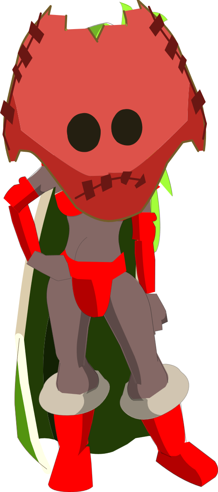

Liste des métiers
| Métier de Récolte |
Pseudo |
| Alchimiste |
|
| Bucheron |
Sadisa |
| Chasseur |
|
| Mineur |
Grale |
| Paysan |
|
| Pêcheur |
Grale |
| Métier de Craft |
Pseudo |
| Bijoutier |
Pas-Taga, Grale |
| Bricoleur |
Pas-taga |
| Cordonier |
|
| Forgeur de Bouclier |
|
| Forgeur de Dagues |
|
| Forgeur d'Epées |
|
| Forgeur de Haches |
|
| Forgeur de Marteaux |
|
| Forgeur de Pelles |
|
| Sculteur d'arc |
|
| Sculteur de Baguettes |
|
| Sculteur de bâtons |
|
| Tailleur |
The-immort |
| Métier de Forgemagie |
Pseudo |
| Cordomage |
|
| Costumage |
Sadisa |
| Forgemage de Bouclier |
|
| Forgemage de Dagues |
Sadisa |
| Forgemage d'Epées |
Sadisa |
| Forgemage de Haches |
|
| Forgemage de Marteaux |
|
| Forgemage de Pelles |
|
| Joillomage |
Sadisa |
| Scultemage d'Arc |
|
| Scultemage de Baguettes |
|
| Scultemage de bâtons |
|
